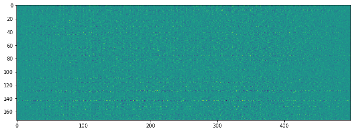

from monitosed.data.core import *
from monitosed.models import *
from monitosed.losses import *generation.cnn
Fill in a module description here
import mat73
from fastcore.xtras import Path
import pandas as pd
import numpy as np
from tsai.all import *Prepare Data
path = Path("../_data/foot1/Rest"); path.ls()(#14) [Path('../_data/foot1/Rest/VR23_RestStim_data_clean.mat'),Path('../_data/foot1/Rest/VR20_Reststim_data_clean.mat'),Path('../_data/foot1/Rest/VR26_Reststim_data_clean.mat'),Path('../_data/foot1/Rest/VR31_Reststim_data_clean.mat'),Path('../_data/foot1/Rest/VR27_Reststim_data_clean.mat'),Path('../_data/foot1/Rest/VR40_RestStim_data_clean.mat'),Path('../_data/foot1/Rest/VR51_RestStim_data_clean.mat'),Path('../_data/foot1/Rest/VR41_RestStim_data_clean.mat'),Path('../_data/foot1/Rest/VR38_RestStim_data_clean.mat'),Path('../_data/foot1/Rest/VR35_RestStim_data_clean.mat')...]Load data
mats = load_mats(path)Loading: VR20_Reststim_data_clean.mat
Loading: VR23_RestStim_data_clean.mat
Loading: VR26_Reststim_data_clean.mat
Loading: VR27_Reststim_data_clean.mat
Loading: VR31_Reststim_data_clean.mat
Loading: VR35_RestStim_data_clean.mat
Loading: VR38_RestStim_data_clean.mat
Loading: VR40_RestStim_data_clean.mat
Loading: VR41_RestStim_data_clean.mat
Loading: VR51_RestStim_data_clean.mat
Loading: VR52_RestStim_data_clean.mat
Loading: VR57_Reststim_data_clean.mat
Loading: VR59_Reststim_data_clean.mat
Loading: VR60_Reststim_data_clean.mat#Optional
signal_len = 500Get labels
The first idea is to perform forecasting, i.e. predict the future signal. To do so, we have to cut the measured signal into a past and the future we would like to predict.
/! the stimulus happens at 250
trn_len = 300
pred_len = signal_len-trn_len
valid_pct=0.2DataBlock
data = np.concatenate([read_data(mat) for mat in mats])
data = data[:,:,:signal_len]
data.shape(778, 173, 500)data.shape(778, 173, 500)#x = torch.from_numpy(data)[:,:, :trn_len]
x = torch.from_numpy(data.copy())
#y = torch.from_numpy(data)[:,:, trn_len:]
y = torch.from_numpy(data.copy())
x.shape, y.shape(torch.Size([778, 173, 500]), torch.Size([778, 173, 500]))x[:,:,trn_len:] = torch.randn(*x[:,:,trn_len:].shape)getters = [ItemGetter(0), ItemGetter(1)]train_ix = int((1-valid_pct)*len(x))splits = (np.arange(0, train_ix), np.arange(train_ix, len(x)))x = torch.tensor(x, dtype=torch.float32)
y = torch.tensor(y, dtype=torch.float32)dblock = DataBlock(blocks=(TSTensorBlock, TSTensorBlock),
getters=getters,
splitter=IndexSplitter(splits[1]),
item_tfms=None,
batch_tfms=None)
source = itemify(x,y)
dls = dblock.dataloaders(source, bs=4, val_bs=8, num_workers=8)xb, yb = dls.one_batch()
xb.shape, yb.shape(torch.Size([4, 173, 500]), torch.Size([4, 173, 500]))plt.plot(xb[0][0].to('cpu').numpy())plt.figure(figsize=(12,6))
plt.imshow(xb[0].to('cpu').numpy())plt.figure(figsize=(12,6))
plt.imshow(yb[0].to('cpu').numpy())net = StagerUNet_M(173, embed_dim=1)xb.shapetorch.Size([4, 173, 500])xout = net(xb.to('cpu'))plt.figure(figsize=(12,6))
plt.imshow(xout[0].to('cpu').detach().numpy())
class CustomLoss(nn.Module):
def __init__(self, size_average=None, reduce=None, alpha=0.5, reduction: str = 'mean') -> None:
super(CustomLoss, self).__init__()
store_attr()
def forward(self, input: torch.Tensor, target: torch.Tensor) -> torch.Tensor:
l1 = F.l1_loss(input, target, reduction=self.reduction)
mse = F.mse_loss(input, target, reduction=self.reduction)
return self.alpha*l1 + (1-self.alpha)*mselearn = Learner(dls, net, loss_func=CustomLoss(), metrics=[mae, rmse], wd=1, cbs=ShowGraph())learn.fit_one_cycle(50, 1e-1)| epoch | train_loss | valid_loss | mae | _rmse | time |
|---|---|---|---|---|---|
| 0 | 8.683238 | 7.330503 | 2.198819 | 3.530182 | 00:08 |
| 1 | 8.341117 | 7.506594 | 2.291394 | 3.566762 | 00:07 |
| 2 | 7.650790 | 7.379282 | 2.248701 | 3.536928 | 00:07 |
| 3 | 8.414534 | 7.686992 | 2.323935 | 3.612485 | 00:07 |
| 4 | 10.199923 | 8.658038 | 2.567312 | 3.840412 | 00:07 |
| 5 | 9.465446 | 8.778734 | 2.634310 | 3.863050 | 00:07 |
| 6 | 9.626359 | 9.003091 | 2.616670 | 3.922947 | 00:07 |
| 7 | 9.537219 | 9.161760 | 2.654912 | 3.958359 | 00:07 |
| 8 | 10.437703 | 9.203692 | 2.692430 | 3.964209 | 00:07 |
| 9 | 10.932980 | 9.572007 | 2.781928 | 4.045007 | 00:07 |
| 10 | 10.355486 | 9.179281 | 2.667349 | 3.961214 | 00:07 |
| 11 | 10.432359 | 8.885451 | 2.584333 | 3.896995 | 00:07 |
| 12 | 10.179681 | 8.932239 | 2.616106 | 3.904916 | 00:07 |
| 13 | 11.126889 | 8.931714 | 2.609179 | 3.905669 | 00:07 |
| 14 | 10.669036 | 8.930193 | 2.629878 | 3.902628 | 00:07 |
| 15 | 12.035663 | 13.616746 | 3.597637 | 4.861672 | 00:07 |
| 16 | 10.201404 | 9.093315 | 2.675924 | 3.938363 | 00:07 |
| 17 | 10.222593 | 9.100693 | 2.659525 | 3.942317 | 00:07 |
| 18 | 11.516212 | 9.075278 | 2.667088 | 3.934904 | 00:08 |
| 19 | 10.148969 | 8.971939 | 2.658292 | 3.909679 | 00:07 |
| 20 | 10.331649 | 8.607456 | 2.573012 | 3.826473 | 00:07 |
| 21 | 10.798733 | 9.618244 | 2.809788 | 4.052986 | 00:07 |
| 22 | 10.140813 | 8.693885 | 2.557110 | 3.851059 | 00:07 |
| 23 | 10.510763 | 9.935025 | 2.841624 | 4.126552 | 00:07 |
| 24 | 9.753046 | 8.207175 | 2.435619 | 3.738814 | 00:08 |
| 25 | 9.223177 | 8.761350 | 2.576370 | 3.866048 | 00:07 |
| 26 | 10.025462 | 9.280467 | 2.783665 | 3.972061 | 00:08 |
| 27 | 9.474289 | 8.305398 | 2.467414 | 3.760769 | 00:07 |
| 28 | 9.725287 | 9.475865 | 2.757726 | 4.024178 | 00:08 |
| 29 | 9.189100 | 7.895681 | 2.346644 | 3.666704 | 00:07 |
| 30 | 9.656518 | 8.121314 | 2.429764 | 3.716566 | 00:08 |
| 31 | 9.059213 | 8.177448 | 2.421543 | 3.732741 | 00:08 |
| 32 | 9.228088 | 7.932686 | 2.391436 | 3.670686 | 00:08 |
| 33 | 8.996842 | 7.988217 | 2.388706 | 3.686154 | 00:08 |
| 34 | 10.009800 | 7.491091 | 2.285060 | 3.563302 | 00:08 |
| 35 | 9.154017 | 7.931686 | 2.364927 | 3.674023 | 00:07 |
| 36 | 9.580307 | 8.622842 | 2.612033 | 3.825396 | 00:08 |
| 37 | 8.347675 | 7.697505 | 2.330055 | 3.614548 | 00:08 |
| 38 | 8.934550 | 7.459208 | 2.240484 | 3.560608 | 00:08 |
| 39 | 8.771791 | 7.361359 | 2.252929 | 3.531259 | 00:08 |
| 40 | 7.997032 | 7.068879 | 2.151896 | 3.462060 | 00:08 |
| 41 | 7.936912 | 7.018462 | 2.126862 | 3.451096 | 00:08 |
| 42 | 8.056854 | 7.143943 | 2.184906 | 3.478934 | 00:08 |
| 43 | 7.695261 | 6.776055 | 2.051615 | 3.391238 | 00:08 |
| 44 | 7.575338 | 6.717569 | 2.041689 | 3.375418 | 00:08 |
| 45 | 7.308348 | 6.494400 | 1.984564 | 3.317263 | 00:08 |
| 46 | 6.936240 | 6.352727 | 1.909878 | 3.285662 | 00:08 |
| 47 | 6.328500 | 6.174939 | 1.849013 | 3.240504 | 00:08 |
| 48 | 5.991862 | 6.096416 | 1.816103 | 3.221293 | 00:08 |
| 49 | 5.966402 | 6.065446 | 1.805477 | 3.213318 | 00:08 |
in_valid, pred_valid, true_valid = learn.get_preds(with_input=True)in_valid.shapetorch.Size([156, 173, 500])plt.figure(figsize=(12,6))
plt.imshow(in_valid[1].to('cpu').detach().numpy())plt.figure(figsize=(12,6))
plt.imshow(true_valid[1].to('cpu').detach().numpy())plt.figure(figsize=(12,6))
plt.imshow(pred_valid[1].to('cpu').detach().numpy())trn_len = 250
pred_len = signal_len-trn_len
valid_pct=0.2data = np.concatenate([read_data(mat) for mat in mats])
data = data[:,:,:signal_len]
data.shape(778, 173, 500)data.shape(778, 173, 500)x = torch.from_numpy(data.copy())[:,:, :trn_len]
y = torch.from_numpy(data.copy())[:,:, trn_len:]
x.shape, y.shape(torch.Size([778, 173, 250]), torch.Size([778, 173, 250]))#x[:,:,trn_len:] = torch.randn(*x[:,:,trn_len:].shape)getters = [ItemGetter(0), ItemGetter(1)]train_ix = int((1-valid_pct)*len(x))splits = (np.arange(0, train_ix), np.arange(train_ix, len(x)))x = torch.tensor(x, dtype=torch.float32)
y = torch.tensor(y, dtype=torch.float32)dblock = DataBlock(blocks=(TSTensorBlock, TSTensorBlock),
getters=getters,
splitter=IndexSplitter(splits[1]),
item_tfms=None,
batch_tfms=None)
source = itemify(x,y)
dls = dblock.dataloaders(source, bs=4, val_bs=8, num_workers=8)xb, yb = dls.one_batch()
xb.shape, yb.shape(torch.Size([4, 173, 250]), torch.Size([4, 173, 250]))plt.plot(xb[0][0].to('cpu').numpy())plt.figure(figsize=(12,6))
plt.imshow(xb[0].to('cpu').numpy())plt.figure(figsize=(12,6))
plt.imshow(yb[0].to('cpu').numpy())class StagerUNet_M(nn.Module):
def __init__(self, channels, dropout_rate=0.5, embed_dim=100, print_shape=False):
super().__init__()
self.conv1 = nn.Conv2d(1, channels, (channels, 1), stride=(1, 1), padding=(0, 0))
self.conv2 = nn.Conv2d(1, 16, (1, 51), stride=(1, 1), padding=(0, 25))
self.conv3 = nn.Conv2d(16, 16, (1, 51), stride=(1, 1), padding=(0, 25))
self.conv4 = nn.Conv2d(16, 16, (1, 51), stride=(1, 1), padding=(0, 25))
self.dropout_rate = dropout_rate
self.embed_dim = embed_dim
self.upconv4 = nn.Conv2d(16, 16, (1, 51), stride=(1, 1), padding=(0, 25))
self.upconv3 = nn.Conv2d(16, 16, (1, 51), stride=(1, 1), padding=(0, 25))
self.upconv2 = nn.Conv2d(16, 1, (1, 51), stride=(1, 1), padding=(0, 25))
self.upconv1 = nn.Conv2d(1, channels, (channels, 1), stride=(1, 1), padding=(0, 0))
self.upconv0 = nn.Conv2d(1, 1, (3, 5), stride=(1, 1), padding=(1, 2))
self.batchnorm1 = nn.BatchNorm2d(16)
self.batchnorm2 = nn.BatchNorm2d(16)
self.batchnorm3 = nn.BatchNorm2d(16)
self.upbatchnorm1 = nn.BatchNorm2d(16)
self.upbatchnorm2 = nn.BatchNorm2d(16)
self.upbatchnorm3 = nn.BatchNorm2d(16)
self.print_shape = print_shape
def forward(self, x):
x = torch.unsqueeze(x, 1)
if self.print_shape: print(x.shape)
x = self.conv1(x)
if self.print_shape: print(x.shape)
x = x.permute(0, 2, 1, 3)
if self.print_shape: print(x.shape)
x = self.conv2(x)
if self.print_shape: print(x.shape)
x, ix1 = F.max_pool2d_with_indices(x, (1,5))
x = F.relu(x)
if self.print_shape: print(x.shape)
x = self.batchnorm1(x)
x = self.conv3(x)
if self.print_shape: print(x.shape)
x, ix2 = F.max_pool2d_with_indices(x, (1,5))
x = F.relu(x)
x = self.batchnorm2(x)
x = self.conv4(x)
if self.print_shape: print(x.shape)
x, ix3 = F.max_pool2d_with_indices(x, (1,5))
x = F.relu(x)
x = self.batchnorm3(x)
if self.print_shape: print(x.shape)
x = F.relu(F.max_unpool2d(x, ix3, (1,5)))
x = self.upbatchnorm3(x)
if self.print_shape: print(x.shape)
x = self.upconv4(x)
if self.print_shape: print(x.shape)
x = F.relu(F.max_unpool2d(x, ix2, (1,5)))
x = self.upbatchnorm2(x)
if self.print_shape: print(x.shape)
x = self.upconv3(x)
if self.print_shape: print(x.shape)
x = F.relu(F.max_unpool2d(x, ix1, (1,5)))
x = self.upbatchnorm1(x)
x = self.upconv2(x)
if self.print_shape: print(x.shape)
x = self.upconv1(x)
#x = x.permute(0, 2, 1, 3)
if self.print_shape: print(x.shape)
#x = self.upconv0(x)
x = torch.squeeze(x, 2)
if self.print_shape: print(x.shape)
return xnet = StagerUNet_M(173, embed_dim=1, print_shape=False)xout = net(xb.to('cpu'))plt.figure(figsize=(12,6))
plt.imshow(xout[0].to('cpu').detach().numpy())learn = Learner(dls, net, loss_func=CustomLoss(), metrics=[mae, rmse], wd=1, cbs=ShowGraph())learn.fit_one_cycle(10, 1e-1)| epoch | train_loss | valid_loss | mae | _rmse | time |
|---|---|---|---|---|---|
| 0 | 14.659051 | 14.726736 | 3.593305 | 5.085289 | 00:05 |
| 1 | 214.715561 | 14.947932 | 3.607458 | 5.127222 | 00:04 |
| 2 | 24.290987 | 14.891907 | 3.595215 | 5.117479 | 00:05 |
| 3 | 16.106245 | 14.899280 | 3.596800 | 5.118765 | 00:05 |
| 4 | 15.731718 | 14.595378 | 3.551017 | 5.063570 | 00:04 |
| 5 | 15.034883 | 13.763484 | 3.423404 | 4.909538 | 00:05 |
| 6 | 15.084778 | 14.826571 | 3.591049 | 5.105104 | 00:05 |
| 7 | 14.762893 | 14.239727 | 3.496456 | 4.998300 | 00:05 |
| 8 | 14.111123 | 13.907266 | 3.460627 | 4.934968 | 00:05 |
| 9 | 13.942387 | 13.868322 | 3.448653 | 4.928285 | 00:05 |
in_valid, pred_valid, true_valid = learn.get_preds(with_input=True)plt.figure(figsize=(12,6))
plt.imshow(in_valid[1].to('cpu').detach().numpy())plt.figure(figsize=(12,6))
plt.imshow(true_valid[1].to('cpu').detach().numpy())plt.figure(figsize=(12,6))
plt.imshow(pred_valid[1].to('cpu').detach().numpy())With CNN Unet
from fastai.vision.all import *x = torch.from_numpy(data.copy())
y = torch.from_numpy(data.copy())
x.shape, y.shape(torch.Size([112, 173, 500]), torch.Size([112, 173, 500]))x[:,:,trn_len:] = torch.randn(*x[:,:,trn_len:].shape)x = x.unsqueeze(1)
y = y.unsqueeze(1)getters = [ItemGetter(0), ItemGetter(1)]train_ix = int((1-valid_pct)*len(x))splits = (np.arange(0, train_ix), np.arange(train_ix, len(x)))x = torch.tensor(x, dtype=torch.float32)
y = torch.tensor(y, dtype=torch.float32)dblock = DataBlock(blocks=(TSTensorBlock, TSTensorBlock),
getters=getters,
splitter=IndexSplitter(splits[1]),
item_tfms=None,
batch_tfms=None)
source = itemify(x,y)
dls = dblock.dataloaders(source, bs=4, val_bs=8, num_workers=8)m = resnet18().to('cpu')m.conv1 = nn.Conv2d(1, 64, kernel_size=(7, 7), stride=(2, 2), padding=(3, 3), bias=False)#m = resnet34()
m = nn.Sequential(*list(m.children())[:-2])
tst = DynamicUnet(m, 1, (173,1500), norm_type=None)learn = Learner(dls, tst, loss_func=CustomLoss(), metrics=[mae, rmse], wd=1, cbs=ShowGraph())learn.fit_one_cycle(50, 1e-1)| epoch | train_loss | valid_loss | mae | _rmse | time |
|---|---|---|---|---|---|
| 0 | 1632921190400.000000 | 14.143175 | 3.568157 | 4.971739 | 00:05 |
| 1 | 637947936768.000000 | 10.103362 | 3.061592 | 4.140668 | 00:04 |
| 2 | 327098269696.000000 | 8.889800 | 2.832117 | 3.866198 | 00:04 |
| 3 | 185855393792.000000 | 7.109853 | 2.375668 | 3.441517 | 00:04 |
| 4 | 111060287488.000000 | 8.583885 | 2.752613 | 3.796730 | 00:04 |
| 5 | 68233117696.000000 | 7.044075 | 2.325434 | 3.429682 | 00:04 |
| 6 | 42607562752.000000 | 13.145415 | 2.998188 | 4.826245 | 00:04 |
| 7 | 26869211136.000000 | 7.008402 | 2.302412 | 3.422630 | 00:04 |
| 8 | 17047899136.000000 | 6.239519 | 2.073871 | 3.225704 | 00:04 |
| 9 | 10857936896.000000 | 6.059170 | 2.009579 | 3.179428 | 00:04 |
| 10 | 6932238848.000000 | 5.649904 | 1.789084 | 3.083946 | 00:04 |
| 11 | 4432684544.000000 | 8.700118 | 2.726332 | 3.830653 | 00:04 |
| 12 | 2837170688.000000 | 8.184817 | 2.553958 | 3.716945 | 00:04 |
| 13 | 1817087232.000000 | 8.000729 | 2.472575 | 3.678163 | 00:04 |
| 14 | 1164232704.000000 | 7.944413 | 2.440209 | 3.667236 | 00:04 |
| 15 | 746131328.000000 | 7.961884 | 2.450220 | 3.670633 | 00:04 |
| 16 | 478257664.000000 | 7.934016 | 2.426708 | 3.666241 | 00:04 |
| 17 | 306587360.000000 | 7.807843 | 2.348485 | 3.642417 | 00:04 |
| 18 | 196551264.000000 | 5.815500 | 1.905546 | 3.118566 | 00:04 |
| 19 | 126013224.000000 | 5.424885 | 1.670002 | 3.029813 | 00:04 |
| 20 | 80792040.000000 | 5.643638 | 1.798897 | 3.080322 | 00:04 |
| 21 | 51799872.000000 | 5.395141 | 1.649085 | 3.023441 | 00:04 |
| 22 | 33211908.000000 | 5.336605 | 1.595821 | 3.012871 | 00:04 |
| 23 | 21294236.000000 | 5.401675 | 1.641944 | 3.026781 | 00:04 |
| 24 | 13653135.000000 | 5.425463 | 1.671751 | 3.029715 | 00:04 |
| 25 | 8753953.000000 | 5.517692 | 1.718729 | 3.052320 | 00:04 |
| 26 | 5612764.500000 | 5.576777 | 1.764135 | 3.064216 | 00:04 |
| 27 | 3598737.000000 | 5.410824 | 1.657147 | 3.027293 | 00:04 |
| 28 | 2307406.000000 | 5.461083 | 1.709691 | 3.035206 | 00:04 |
| 29 | 1479444.250000 | 5.398842 | 1.645404 | 3.025274 | 00:04 |
| 30 | 948579.937500 | 5.406946 | 1.659028 | 3.025701 | 00:04 |
| 31 | 608205.562500 | 5.430084 | 1.703600 | 3.025982 | 00:04 |
| 32 | 389967.375000 | 5.498315 | 1.743404 | 3.041912 | 00:04 |
| 33 | 250039.437500 | 5.373926 | 1.628170 | 3.019881 | 00:04 |
| 34 | 160321.687500 | 5.451953 | 1.716511 | 3.031071 | 00:04 |
| 35 | 102797.226562 | 5.251470 | 1.531953 | 2.995161 | 00:04 |
| 36 | 65914.156250 | 5.347603 | 1.629506 | 3.010930 | 00:04 |
| 37 | 42265.812500 | 5.274804 | 1.559856 | 2.998291 | 00:04 |
| 38 | 27103.144531 | 5.263797 | 1.545898 | 2.996948 | 00:04 |
| 39 | 17381.355469 | 5.307605 | 1.597502 | 3.002950 | 00:04 |
| 40 | 11147.966797 | 5.233015 | 1.514532 | 2.991905 | 00:04 |
| 41 | 7151.357910 | 5.214554 | 1.496712 | 2.988711 | 00:04 |
| 42 | 4588.866211 | 5.237797 | 1.523139 | 2.992065 | 00:04 |
| 43 | 2945.803467 | 5.213714 | 1.502283 | 2.987498 | 00:04 |
| 44 | 1892.339600 | 5.223987 | 1.514916 | 2.988822 | 00:04 |
| 45 | 1216.849365 | 5.212569 | 1.501140 | 2.987306 | 00:04 |
| 46 | 783.749878 | 5.208292 | 1.494889 | 2.986921 | 00:04 |
| 47 | 506.108246 | 5.202664 | 1.489127 | 2.986001 | 00:04 |
| 48 | 328.085876 | 5.202224 | 1.488591 | 2.985943 | 00:04 |
| 49 | 213.848007 | 5.202709 | 1.488937 | 2.986048 | 00:04 |
in_valid, pred_valid, true_valid = learn.get_preds(with_input=True)in_valid.shapetorch.Size([23, 1, 173, 500])plt.figure(figsize=(12,6))
plt.imshow(in_valid[3][0].to('cpu').detach().numpy())plt.figure(figsize=(12,6))
plt.imshow(true_valid[3][0].to('cpu').detach().numpy())plt.figure(figsize=(12,6))
plt.imshow(pred_valid[3][0].to('cpu').detach().numpy())